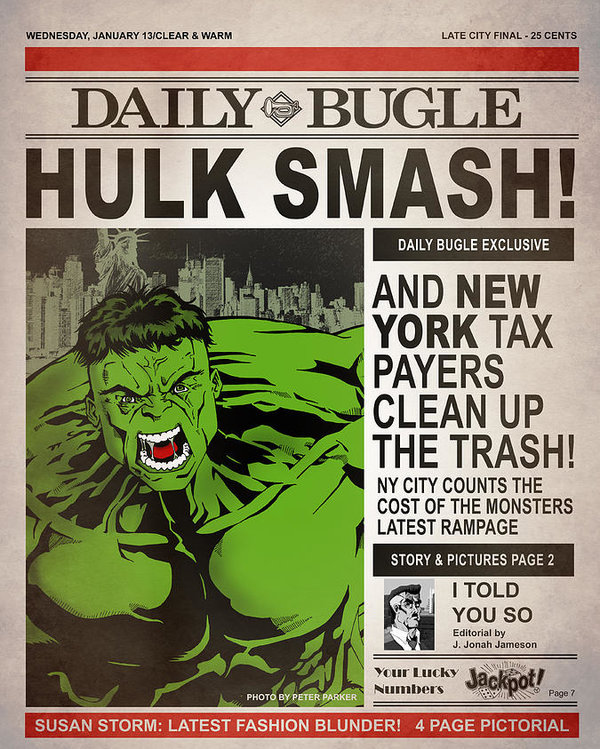
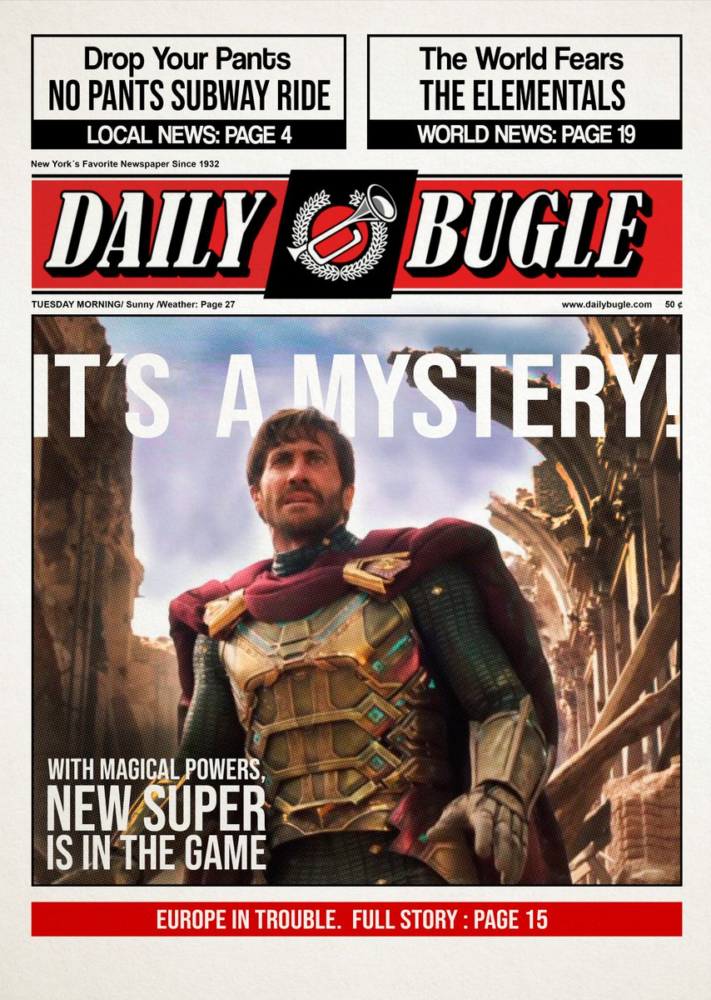

Hulk causa transtorno no Brooklin. Ao impedir um banco de ser assaltado, o gigante esmeralda teria pisoteado 4 carros e uma motocicleta além de deixar o asfalto marcado e desnivelado com suas pegadas. Já se é esperado visto que o golias nada mais é do que um parceiro do cabeça de teia. Leia mais
Mistério!

Quem é o homem misterioso visto ajudando o macaco noturno? Antes ser amigo do símio do que da fraude aracnídeaVeja mais